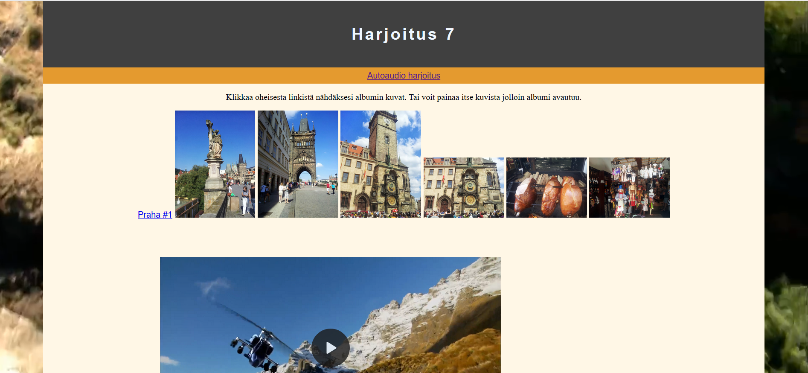

Tapio Kolehma
Tietoja minusta:
Hei
Olen vastavalmistunut ja valmiina uusiin haasteisiin oleva tieto- ja viestintätekniikan insinööri.
Erikoistuin opinnoissani Web-kehitykseen ja tavoitteenani on työskennellä sen parissa työskentelevässä yrityksessä tulevaisuudessa.
Alla olevissa kategorioissa on esimerkki kuvia koodin pätkistä mitä olen tuottanut ja lyhyt selostus asiaan liittyen.
Huom. Uudistan parhaillaan sivua, joten kaikki kategorioissa olevat linkit eivät välttämättä toimi.
Osaamisiani done
Html, CSS, Bootstrap

Html ja css ovat perustana opinnoissani. Näitä tulee enemmän tai vähemmän käytettyä jokaisen ohjelmointikielen kanssa. Tämän sivun olen toteuttanut HTML, CSS, JavaScript ja Bootstrap yhdistelmällä. Tässä lisää kerrottuna osaamisistani
Ohjelmointitaidot

Websivulle toiminnallisuutta mm. JavaScriptin ja PHP:n avulla. React Native ja Kotlin on tullut tutuksi mobiili-ohjelmoinnissa. Niiden lisäksi olen C#:lla ohjelmoinut hiukan.
Linkki tarkempaan kuvaukseen
Palvelinpuolen taidot: Käyttöjärjestelmät ja tietokannat
Linux ja Windows käyttöjärjestelmiä on tullut opittua mitä kaikkea voi tehdä terminaalin kautta. Sitä kautta sai taitoja joista voi olla apua muutenkin koneen käytössäkin. MySQL on tullut tutuksi, jota kautta avautui tietokantojen rakenne ja muodostaminen.
Lisää palvelinpuolesta
Muita osaamisiani
Muihin osaamisiini kuuluu muun muassa kuvan, videon ja audion muokkaamista. Pienimuotoista animaation tekoa on myös tultu tehtyä. Tällaisia media-tekniikan perustaitoja. Muuta osaamista
WordPress
WordPressin kanssa työskentely on minusta mukavaa. Olen työstänyt niin Front-End kuin Back-End puolta. Tehnyt custom teemaa ja pluginien kanssa tehnyt säätöä. WordPressistä enemmän
Harrastukset directions_run
Lenkkeily
Yksi harrastuksistani on lenkkeily. Käyn lenkillä joskus kerran viikossa ja joskus useammin. Pyrin kuitenkin siihen että käyn vähintään kerran viikossa, se vain riippuu siitä miten paljon aikaa minulla on viikolla.
Lenkkeily on hyvää vastapainoa koodaamiselle ja tietokoneella istumiselle, lisäksi siinä pysyy kunnossa. Sekä mieli virkistyy ja selventyy kun käy juoksemassa pienen lenkin.
Lenkkeilen mieluummin metsässä kuin kaupungissa ja kuuntelen samalla musiikkia.
Lihaskunnon ylläpito
Pidän lihaskunnosta huolta tekemällä erilaisia liikkeitä mitä nyt omassa kämpässä pystyy tekemään. Näin saa monipuolisesti eri liikkeillä liikuteltua ja heräteltyä lihaksia. Lisäksi venyttelen mikä auttaa etenkin jos istuu tietokoneen ääressä pidempään.
Tietokoneella pelaaminen
Pelaan tietokoneella eri pelejä jos ja kun siihen aikaa. Tietenkin tärkeysjärjestys olla pitää, niin aina ei kerkeä. Pelailen useita eri peli-genrejä ja nekin vaihtelevat ajan kanssa mitä milloinkin pelaan. Olen pelannut lähinnä itseäni viihdyttääkseni, enkä ole harrastanut kilpapelaamista. Peligenret menevät itsellä laidasta laitaan vähän kaikkea tulee pelattua ja kokeiltua.